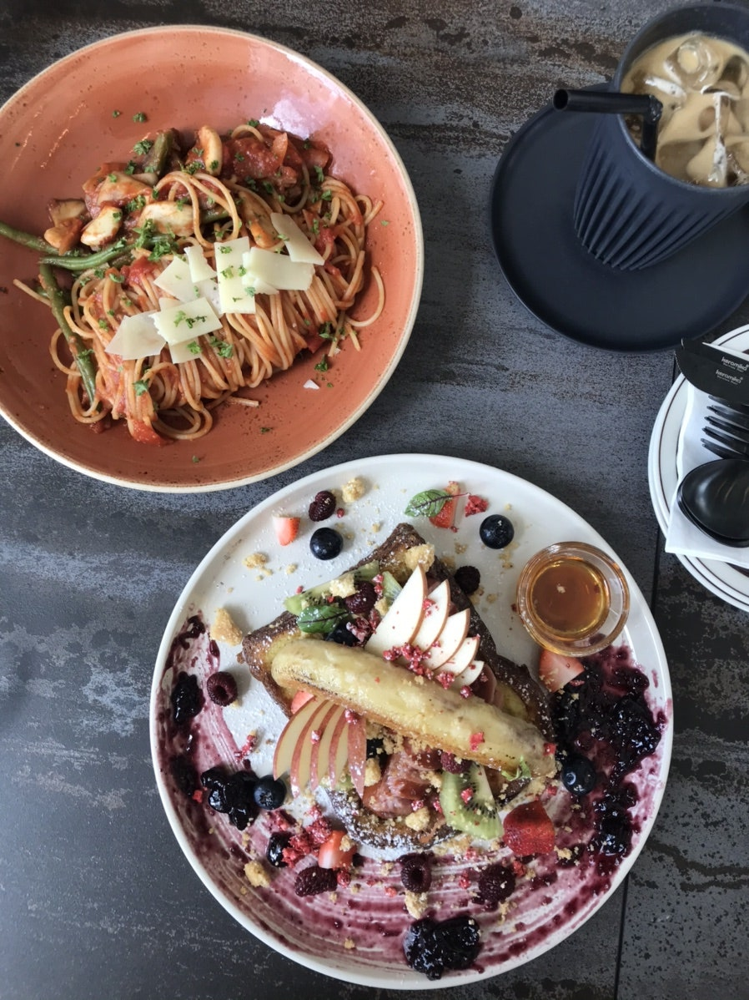
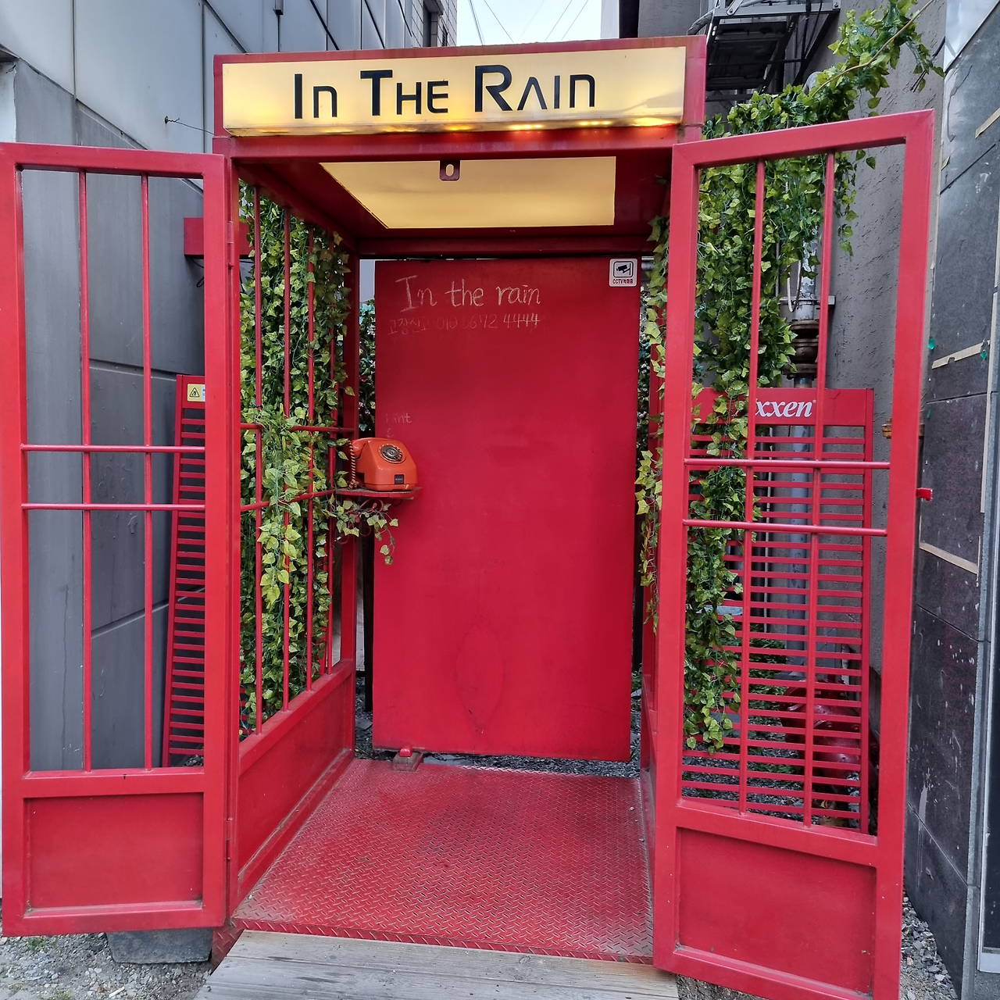
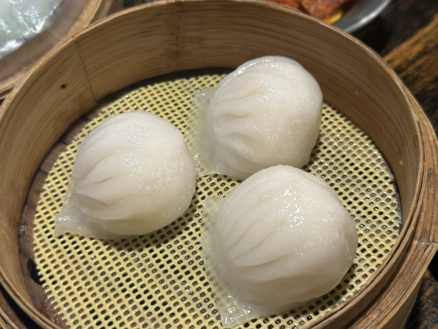

퀸스타운 Queenstown
경기도 화성시 동탄기흥로 520번나길 20
맛과 예쁜 외견 두 마리 토끼를 잡은 브런치 카페. 파스타가 맛있고, 특히 프렌치 토스트에 과일이 듬뿍 올라가 있어 사진을 찍기에도 좋다.

인더레인 In The Rain
대전광역시 중구 대종로 485-1
수화기를 들어 전화 부스 안쪽으로 들어가면 만날 수 있는 낭만 있는 컨셉의 칵테일 바. 전화부스 안에는 우산이 구비되어 있고, 겨울이 아니라면 위쪽의 스프링쿨러로 마치 비가 내리는 것처럼 물이 쏟아진다. 이색적이고 분위기 있는 칵테일 바를 찾는다면 바로 여기!

매란방
서울 성동구 왕십리광장로 17 2층 역무1호
딤섬을 원하는 만큼 먹고 싶다면 찾아가는 맛집. 갓 쪄 나와 재료가 신선하고 푸짐하다. 개인적으로 가장 맛있었던 딤섬은 새우 하가우. 새우로 만들어진 속이 앞니를 튕겨낼 정도로 탱글탱글하고 육즙도 가득하다.

17ºC
마포구 양화로19길 22-16 1층
초콜릿 관련 메뉴들을 판매하기로 명성이 높은 초콜릿 전문점. 크리스마스 시즌에는 초콜릿 케이크를 많이 판매하는데, 초콜릿 함량이 높고 설탕 함량이 적어 진한 초콜릿의 맛을 느낄 수 있으면서도 달지 않아 얼마든지 퍼먹을 수 있다. 와인과 함께하면 일품!